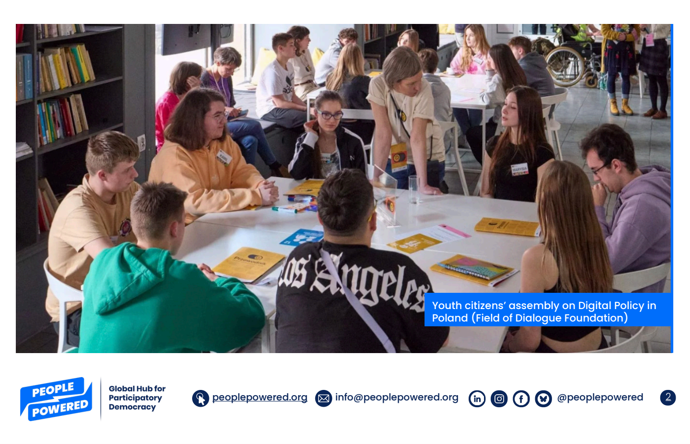

Maria Milosh
Writing
Research and writing on democratic innovation, civic institutions, and policy

Impacts of Citizens’ Assemblies: A Summary of the Latest Research by People Powered
We collated scientific evidence on the effects of citizens' assemblies around the world and made it accessible and useful to practitioners, activists, and advocates in government and civil society. There's also a browsable collection of papers and illustrative cases, which will come in handy for democracy innovation practitioners.
Citizen assemblies will help save democracy
In this article I explore how citizen assemblies offer a promising response to the global crisis of representative democracy. It's written in Russian (with a pinch of hot takes on participation in autocracies). This topic is still on the margins of Russian-language discourse and I’d love to help change that.

Political polarisation impedes the public policy response to collective risk
As the use of face masks has been shown to effectively diminish the spread of COVID-19 without hampering economic activity, it should be among the least controversial public policy responses to the pandemic. But in the US we still observe an ideological split that overrides local policy rules.

Performance based management and meritocracy in Russian public service: experimental evidence
An experiment we conducted to tease out the effects of formalization of administrative processes on local public service in one of the regions of Russia.